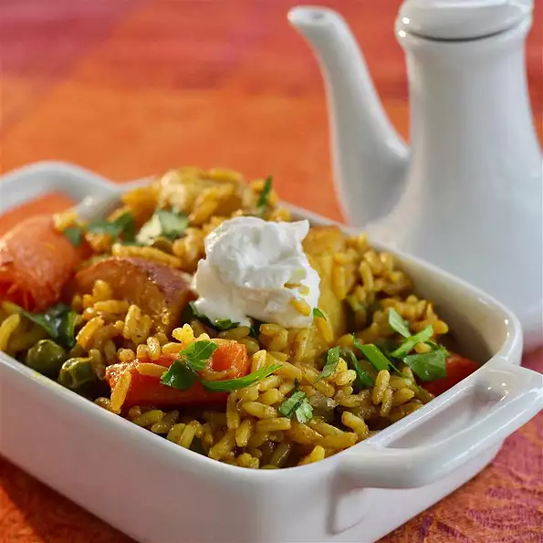

Vegetable-Biryani

Biryani (/bɜːrˈjɑːni/) is a mixed rice dish originating among the Muslims of the Indian subcontinent.
It is made with Indian spices, rice, and usually some type of meat (chicken, beef, goat, lamb, prawn,
fish) or in some cases without any meat, and sometimes, in addition, eggs and potatoes.
Biryani is one of the most popular dishes in South Asia, as well as among the diaspora from the region.
Similar dishes are also prepared in other parts of the world such as in Iraq, Thailand, and Malaysia.
Biryani is the single most-ordered dish on Indian online food ordering and delivery services.
Ingredients
- ¼ cup and 1 tablespoon and 1 teaspoons long-grain white rice
- ½ tablespoon vegetable oil
- .17 large onion, thinly sliced
- ⅚ teaspoon cumin seeds
- ⅓ bay leaves, broken in half
- ⅓ potatoes, quartered
- ⅓ carrots, quartered
- ¼ teaspoon ground turmeric
- ⅙ teaspoon chile powder, or more to taste
- ⅚ teaspoon ground coriander
- ⅓ cup and 1 tablespoon and 1 teaspoons water
- 2 ½ tablespoons and ½ teaspoon shelled peas
- ¼ teaspoon salt, or to taste
- ⅙ teaspoon butter
- ⅚ teaspoon garam masala
Steps
- Place rice in large container and cover with several inches of cool water; let soak for 20 minutes. Drain.
- Heat oil in a pressure cooker over medium heat. Add onion, cumin seeds, and bay leaves; cook and stir until
onion is translucent, about 5 minutes. Stir in potatoes and carrots; cook until lightly browned, about 5 minutes.
Stir in turmeric, chile powder, and coriander; cook until fragrant, about 1 minute.
- Stir rice gently into the pressure cooker until evenly coated with oil. Pour in water and peas. Stir in salt,
butter, and garam masala. Seal cooker and bring to high pressure according to manufacturer's instructions. Cook
for 5 minutes. Remove from heat.
- Release pressure naturally according to manufacturer's instructions. Fluff rice with a fork.